15.07.2026 / Dossier / critical / 5 min read
Volt Typhoon stopped watching. Now it's looking for the stop button
For five years Volt Typhoon hid inside US critical infrastructure and touched nothing. In 2026 Dragos catches it manipulating engineering workstations to learn which conditions halt an industrial process. And it no longer sources its own access — a broker inside its own apparatus hands it over.

For five years Volt Typhoon did exactly one thing, and did it superbly: nothing. Inside some US critical infrastructure networks, CISA documents persistent access lasting "at least five years". No ransomware, no bulk exfiltration, no sabotage. Just presence. Pre-positioning is the doctrine: get in now so that someone, somewhere else, can decide to act later.
In 2026 that discipline cracked — and it cracked in the worst possible direction.
The origin
Volt Typhoon is attributed to the Chinese state and has been tracked since 2021 under a pile of names that says a lot about how fragmented this industry is: BRONZE SILHOUETTE at Secureworks, Vanguard Panda at CrowdStrike, UNC3236 at Mandiant, Voltzite at Dragos, Insidious Taurus at Unit 42.
The target set is stated and restated: Communications, Energy, Transportation, Water and wastewater across the US and its territories, Guam included — a geographic detail no serious analyst reads as incidental. Add emergency services, the defense industrial base, satellite services, and an expansion into Africa and Southeast Asia.
The historical front doors are the usual suspects: Fortinet, Ivanti/Pulse Secure, NETGEAR, Citrix, Cisco. The CVEs named in earlier campaigns — CVE-2024-39717 in Versa Director, CVE-2021-40539 in Zoho ManageEngine ADSelfService Plus — belong to this actor's past, not to 2026 activity. Say it plainly: no source names a specific CVE for the 2026 phase. Anyone selling you a decisive IoC for this campaign is selling something the primary sources don't have.
The attack chain
The structural news sits upstream of everything else, and Dragos calls it SYLVANITE.
SYLVANITE doesn't do OT espionage. It does initial access, full stop: exploiting edge, VPN and firewall vulnerabilities — often weaponised within 48 hours of disclosure — typically leaning on Cobalt Strike or Sliver. Then it hands the access over to Voltzite/Volt Typhoon, who runs the actual intrusion.
This is a near-corporate division of labour, lifted from the initial-access-broker model of financially motivated crime and applied to state espionage. Volt Typhoon becomes the end customer of a supply chain internal to its own apparatus. The defensive implication is blunt: weaponisation speed is no longer a constraint on the OT actor. It's a service they buy.
An uncertainty statement is mandatory here. SYLVANITE-as-separate-broker comes from a single vendor source, Dragos, corroborated only indirectly by the MITRE page, which manages a careful "reporting indicates". This is the softest part of the picture. The historical core, by contrast, is bedrock: AA23-144A and AA24-038A, jointly signed by CISA, NSA and FBI.
Once access changes hands, the sequence is well documented:
- Discovery using native commands —
net user,quser,net group /dom(T1087.001, T1087.002). - Credentials from OpenSSH, RealVNC and PuTTY, plus the tell that reveals the level of aim: the browser history of network administrators (T1555.003). They aren't hunting passwords. They're hunting the mental map of the people who run the network.
vssadminfor shadow copies, then extraction ofntds.ditand the SYSTEM/SECURITY hives from domain controllers.- Staging in password-protected, multi-volume 7-Zip archives under
C:\Windows\Temp\(T1074). - Persistence through legitimate VPNs (T1133), C2 on compromised third-party VPS and PRTG servers (T1583.003).
- Obfuscation via the KV Botnet — end-of-life Cisco and NETGEAR SOHO routers, MITRE campaign C0035 (T1584.008, T1090.003).
- Selective Windows event log deletion. Selective is the operative word: wiping everything is an alarm, wiping the right lines is invisible.
Then 2026 arrives. Dragos observes manipulation of engineering workstations to pull configurations and alarm data, with a purpose the reporting states without euphemism: working out which conditions stop industrial processes. Dragos classes it as a "Stage 2 capability".
Translation: they've stopped mapping the network. They're studying the stop button.
Detection
csvde.exeused to export Active Directory data: legitimate tool, almost never a legitimate context.- Volume Shadow Copy followed by NTDS.dit extraction on a domain controller. If you see it, you're late — but not too late.
- Multi-volume 7-Zip archives in
C:\Windows\Temp\. - Valid VPN logons from geolocations or at hours that don't match the human behind the account.
The underlying problem is that heavy living-off-the-land tradecraft makes traditional detection structurally ineffective. Dragos's 2026 figures put numbers on it: 56% of penetration tests evaded detection using LOTL tooling alone, and 73% of incident response cases involved compromised VPN credentials or jump hosts. There's no signature to write. There's only behaviour to model.
Remediation
- Attack surface hardening on edge devices. They are the door, every time.
- Credential protection, especially for administrators — the stated objective.
- Remote access restriction and segmentation, with genuine IT/OT separation.
- Cloud asset protection, broad logging, threat modeling and training.
- In the US context, CISA's "CI Fortify" initiative (May 2026) shifts the emphasis to isolation and recovery — which is to say, it assumes the intrusion already happened. That's the most honest admission in any recent official document.
What it teaches
An actor who hides for five years without touching anything is an intelligence problem. An actor who starts testing what stops a plant is a civil protection problem.
The jump from passive pre-positioning to active manipulation of engineering workstations changes the defensive question itself. For years the question was: are they in? Statistically, the answer is yes. The 2026 question is different, and far less comfortable: how much do they understand about our physical process, and what have they already learned about halting it?
Meanwhile the apparatus serving them has reorganised like a business, with one unit sourcing access and another using it. We still defend in silos. They found specialisation first.